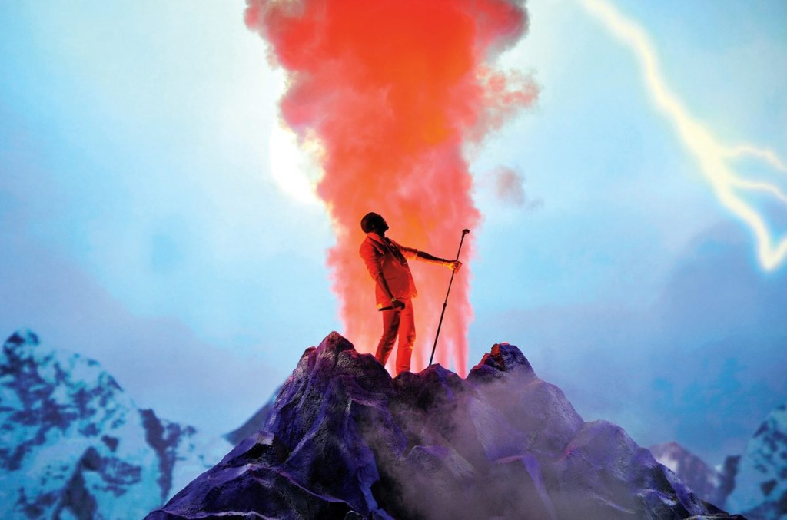

Классического бесконечного тура только под MBDTF не было: зато ночь релиза в Нью-Йорке и фестивальные хедлайны 2011 года с балетом, краном и декорациями в одной визуальной линии с фильмом Runaway и обложками George Condo.
После релиза 22 ноября 2010 года не анонсировали длинный цикл «один альбом, десятки городов подряд». Были выборочные площадки: камерный клуб в день выхода пластинки и крупные фестивали, где сет опирался на материал MBDTF и ту же сценическую эстетику, что в Runaway и на обложках.
22 ноября 2010 в Bowery Ballroom прошел сет сразу после выхода альбома: в репортажах — смесь живых треков, вокала и монологов, плотная атмосфера «после VMA» и контраст между узким залом и масштабом записи.
К 2011 году постановка выросла: балерины, костюмы, декор с отсылкой к «руинам», кран, киношная подача. Среди часто упоминаемых площадок в США: Coachella, Summerfest (Милуоки), Essence Festival (Новый Орлеан), Austin City Limits (Остин).
На Austin City Limits в сентябре 2011 Канье связывал этот сет с завершением главы «Dark Fantasy» перед совместным туром Watch the Throne с Jay-Z: MBDTF остается отдельной аркой, дальше другая афиша.
| Когда | Где | Заметка |
|---|---|---|
| 22.11.2010 | Нью-Йорк, Bowery Ballroom | Клуб в ночь релиза MBDTF |
| Весна 2011 | Coachella | Фестивальный хедлайн в духе альбома |
| 30.06.2011 | Summerfest, Милуоки | Сет с балетом и крупной сценой |
| Лето 2011 | Essence, Новый Орлеан | Фестиваль в той же визуальной линии |
| 16.09.2011 | Austin City Limits | Финал «Dark Fantasy»-главы перед Watch the Throne |